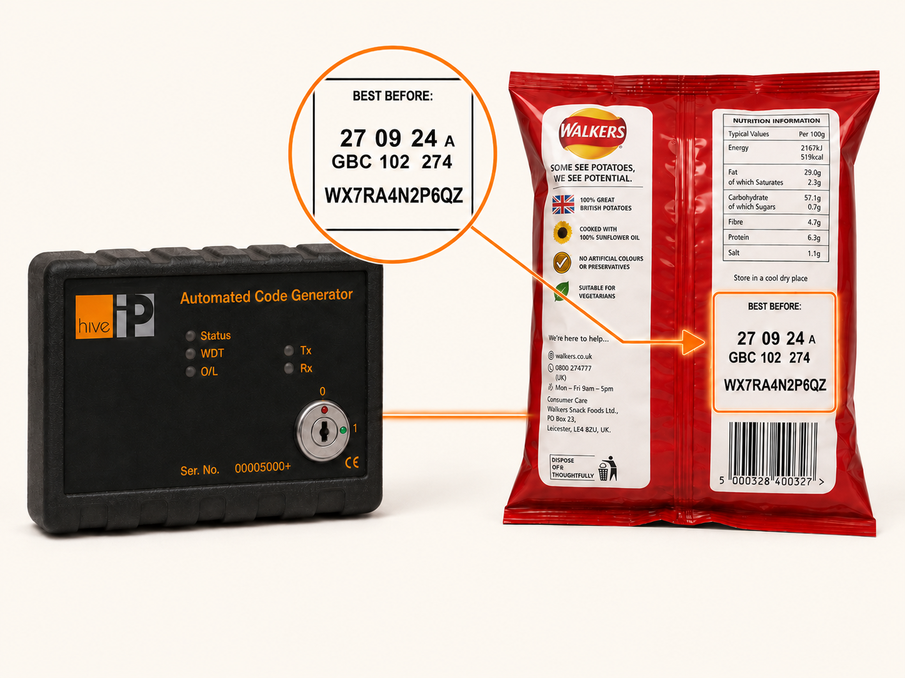

The old way: codes printed at the packaging supplier
For decades, brands wanting unique codes on their packs had one option: send the artwork to a packaging supplier and pay them to apply the codes during the printing run. That model still exists today, and it carries serious limitations.
- Cost. Packaging suppliers typically charge between £3,000 and £5,000 per million coded packs — whether or not those codes ever form part of a campaign.
- Lead time. The artwork-to-shelf cycle for a unique-coded promotion runs in months, not days. Missed sponsorship moments, missed sport, missed seasonal opportunities.
- Supply-chain risk. Codes are passed between organisations — the brand, the agency, the supplier — each a potential leakage point.
- Lost meta-data. Because codes are printed before production, they cannot be associated with the production date, SKU or line. The richest fraud-detection and analytics signals are unavailable.
- Consumer friction. Codes printed inside the pack mean consumers have to rip open packaging to find them — bad for the consumer experience and bad for in-store presentation.
The Hive IP way: codes printed in the factory, alongside the BBD
Hive IP’s ACG is a small device that plugs into the existing Best Before Date printer on each production line. When the BBD printer requests a code, the ACG generates a unique, non-sequential code on the fly and transmits it to the printer, which prints it on the pack alongside the BBD — on the outside, where the consumer can find it without opening anything.

- Install in 10–15 minutes per line. No production slowdown, no new printer hardware required.
- Hot-swappable. Spare units cover any device failure; replacement is a 60-second job.
- Compatible with all major BBD printers. Markem-Imaje SmartDate, X60, X65 and other major brands.
- Closed-loop and secure. Codes are generated algorithmically, never stored on the device, never passed to third parties.
- Synchronised instantly. Every code generated is automatically synced with our cloud validation service the moment it leaves the line.
The savings story
The headline is dramatic: customers typically save 78% or more on print costs versus the legacy packaging-supplier route, depending on annual volume and how many campaigns run inside the engagement period. The savings compound with every additional campaign, because the hardware is already in place and only the codes covered by the new campaign are billed.
Why the savings compound. The legacy approach charges per coded pack regardless of whether the codes form part of any campaign. With Hive IP, you only pay on the codes covered by an active promotion — the codes on packs in market during the campaign window — at a rate that’s a fraction of the legacy supplier rate. Codes on packs outside any active campaign cost nothing.
A worked example. A brand produces 120 million packs per year, with every pack carrying a code (10 million per month). They run a single 2-month promotion. The codes on the 20 million packs in market during those 2 months are billed at our usage rate. The remaining 100 million coded packs that year cost nothing. If they run a second 2-month promotion later in the year, that adds a further 20 million to the bill — total billed: 40 million from a 120 million annual production, on a per-million rate that is a fraction of what the legacy supplier route would have charged on the same 40 million.
For a tailored estimate based on your annual production volume and campaign cadence, use our savings calculator or get in touch directly.
The agility upside
The savings are the headline. The agility might be more important.
Because every pack already carries a code, you are never waiting for a print run to catch up with a marketing idea. A campaign that would traditionally take three to six months — design, brief the supplier, print run, supply chain, into store — can launch in days or even hours. That changes what marketing teams can do:
- React to live events. A sporting moment, a viral trend, a competitor move — trigger a digital direct-to-consumer push the same week, not the next quarter.
- Run regional pilots. Test a mechanic in one market or store cluster before a national roll-out, without a separate print cycle.
- Reactivate sponsorship. Tie a promotion to an athlete, team or event and have it ready to go the moment it’s relevant.
- Personalise rewards. Use the per-pack identifier to deliver targeted offers based on what a consumer has bought before.
None of these are practical when codes have to be planned and printed months ahead. They’re straightforward when every pack already carries one.
The consumer experience upside
Printing the code on the outside of the pack instead of the inside isn’t a marginal detail — it changes participation rates measurably.
- No need to rip open packaging to find the code — especially valuable on multi-pack and gift-format products where damaging the pack matters.
- Easy to read or scan with a mobile device, increasing successful first-time entries.
- On-the-go participation works for impulse entries during commutes, lunch breaks, in-store moments — all of which are otherwise lost to friction.
The honest answer on code copying
The most common question we get on outside-the-pack printing is whether someone can copy the code in store without buying the product. It’s a fair question, and one we measure on every campaign. The answer is layered.
Most consumers don’t copy codes
The overall incidence of code-copying on prize draws and point-collection schemes is statistically tiny relative to legitimate entries. We measure it on every campaign and report it back to the brand.
There are two types — and only one is solved by hiding the code
Type 1 is in-store copying: someone scans without buying. Type 2 is sharing: a legitimate buyer giving the code to a friend or family member. Type 2 happens whether the code is on the inside or outside of the pack. Hiding the code doesn’t fix it — and Type 2 is by far the more common type.
AI Vision can audit the rare in-store copying concern
If a campaign’s risk profile warrants it, recent AI Vision advances make it feasible to add an audit step to the consumer journey. The user can be asked to scan the code and surrounding environment so the campaign can check they are not standing in-store when submitting the code. That check can run for every entry, or only when Hive IP’s fraud monitoring flags suspicious behaviour. More on AI Vision audit checks →
A measure-retain-audit framework backs up the rest
For higher-stakes promotions — prize draws with monetary value — winners can be required to retain their physical pack and produce it on request. Audits are typically only triggered on participants who have won something of real value, or who have breached a risk-score threshold — so the operational overhead is small.
The advantages of outside-the-pack more than cover the residual fraud
Lower print cost, faster speed-to-market, no need to rip open packs, easier mobile scanning, far better consumer experience and consequently higher engagement rates. These compound into a much larger commercial benefit than the marginal fraud they enable.
For the vast majority of promotions, printing on the outside is the right answer. For the small set of campaigns where the brand judges the risk profile differently, we offer the supplier route — and the rest of the system is identical.
When the packaging-supplier route is still the right call
To be balanced: there are situations where supplying codes to a packaging supplier for inside-pack printing is the right answer, not the in-factory ACG.
- Low-volume programmes where the savings from in-factory don’t justify the install effort.
- Pilot campaigns where the brand wants to test a mechanic before committing to ACGs across factories.
- Production-line constraints where the existing BBD printer setup can’t accommodate an ACG.
- Brand preference for inside-pack printing for aesthetic, security or product-format reasons.
In all of those cases, the rest of the Hive IP system — algorithmic generation, cloud validation, fraud monitoring, the API for agencies, the Consumer Support Panel — works exactly the same. See the packaging-supplier route →
Common questions
If codes are printed on the outside of the pack, can’t people copy them?
In practice, in-store code copying is rare. The larger fraud vector — code sharing between people who know each other — happens regardless of where on the pack the code is printed. Where the campaign risk profile warrants it, recent AI Vision advances make it feasible to add an audit step that checks the user is not in-store when submitting the code. A measure-retain-audit framework backs up higher-stakes promotions. The engagement gains from outside-the-pack codes more than cover the residual fraud.
How fast can the ACG be installed on a production line?
Typically 10–15 minutes per line. The ACG is a small device that plugs into the existing Best Before Date printer using supplied cabling. There is no production slowdown and no new printer hardware required beyond the unit itself.
How much can a brand save by printing in-factory?
Hive IP customers typically save 78% or more on print costs depending on volume. The legacy packaging-supplier route charges £3,000–£5,000 per million coded packs whether or not those codes form part of any campaign. With the ACG, you only pay on the codes covered by an active promotion (the codes on packs in market during the campaign window), at a rate that’s a fraction of the legacy supplier rate. Additional campaigns inside the engagement period unlock further savings because the hardware is already in place.
Does the ACG work with our existing printers?
The ACG is designed to operate with all major makes of in-factory Best Before Date printers, including Markem-Imaje SmartDate, X60 and X65. We carry out a factory audit before installation to confirm compatibility and configure each unit for your production setup.